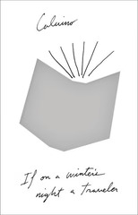

If on a winter's night a traveler
Se una notte d'inverno un viaggiatore
So: this is the reason I started the Year of Calvino project in the first place. I read IWNT for the first time in ... college or graduate school, I guess, so it's been 25-30 years since I first picked it up, and for the longest time I called it my favorite book, and Calvino my favorite author -- even as the details faded, and I mostly remembered the concept and the audacity.
It's been two and a half months since I finished The Castle of Crossed Destinies, and I spent the majority of that time not picking up IWNT. I was anxious that I wouldn't like it or appreciate it, or that I'd wholly misremembered it, and I suppose that would have meant that this whole project (despite what I've already gotten from it) would have been a mistake.
Once I got over the starting line, though, I'm happy to find that I'm still pretty pleased with IWNT, and that the high concept still works well. I was excited to recognize echoes of previous works, now that I was reading with a more fleshed-out background in Calvino -- there are bits of Cosmicomics scattered throughout, for instance -- but I was even more interested to see newer themes emerging. Ludmilla and Lotaria are the most active women in Calvino's body of work so far (and several of the embedded novels, short as they were, had more developed women than many of his other works).
IWNT is also the most physical (or maybe carnal? Especially in the second half) of Calvino's works, and that came as a surprise -- he'd touched on sex in the past, but never as graphically as in On the carpet of leaves illuminated by the moon (even if it's also tempered by Cosmicomics-inflected physical detail).
At the same time, I'm a touch disappointed. I wish the embedded novels had been a bit more distinct in style from each other -- and especially that they'd stayed far away from the metafictional approach taken in the framing narrative. Most of them did, but I found the couple that didn't, that continued to discuss the Reader, extremely distracting.
In a similar vein, I think Calvino could have done more with the different media of the embedded texts, most clearly with the one being read aloud and translated on the fly. He lampshaded this in the next meta passage, mentioning how the hesitation of the translator lessened as he read, but it would've been interesting to explore that in the actual text that we got -- something more hesitant, more looping as he searched for the right words, instead of the cleaned-up version.
I don't think this is my favorite book now; it doesn't hold up in reality the way it did in memory (but when does anything, ever?) It is, still, a vitally important book for me, and I appreciate it -- maybe now more than I have before.